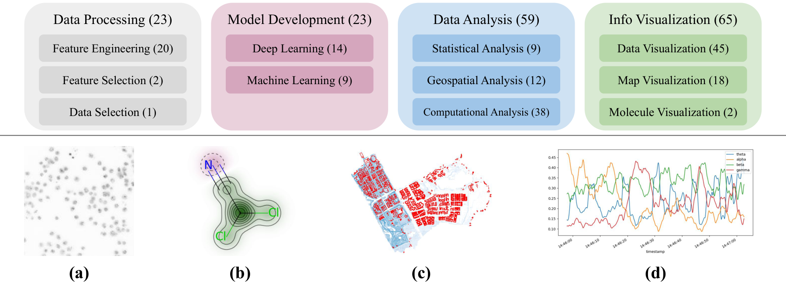
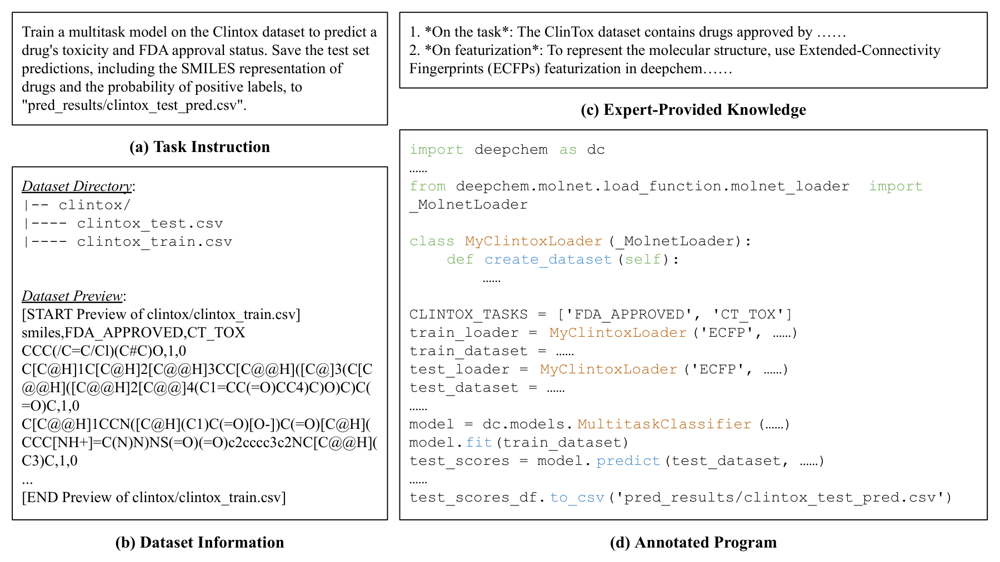
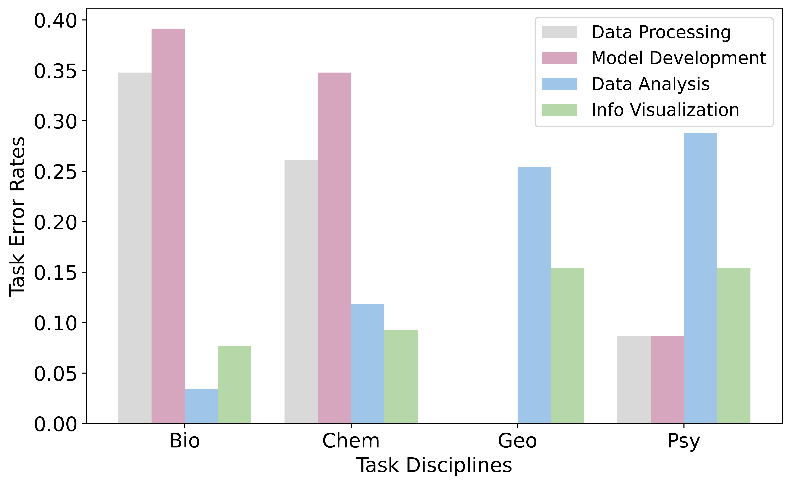

ScienceAgentBench：数据驱动科学发现 agent 的严格评测基准
ScienceAgentBench: Toward Rigorous Assessment of Language Agents for Data-Driven Scientific Discovery
①开源贡献 Open-source Artifacts
ScienceAgentBench 是一个完整开源的 benchmark + 评测 harness：任务标注表与输入挂在 Hugging Face，benchmark 全量素材（数据集、参考程序、rubric、评测脚本）随仓库与官方下载发布，代码以 MIT 许可证开放，绝大多数任务采用 CC BY 4.0。这意味着别人可以真正跑通整条评测流水线而不只是看论文报数字。
| 类型 | 是否开源 | 内容 / 链接 |
|---|---|---|
| 代码 Code | ✔ | github.com/OSU-NLP-Group/ScienceAgentBench（MIT）：agent 推理脚本 run_infer.py、评测流水线（支持 docker 化并行评测）、指标计算 calculate_metrics.py、从 agent 日志恢复代码的 recover_pred_from_log.py，并集成 OpenHands CodeAct。 |
| 模型权重 Weights | — | 本文不训练模型，只评测现成 LLM（Llama-3.1、Mistral-Large-2、GPT-4o、Claude-3.5-Sonnet、OpenAI o1），无权重发布。 |
| 数据集 Dataset | ✔ | Hugging Face osunlp/ScienceAgentBench（任务标注表与输入）；benchmark 完整素材（含数据集、参考 program、rubric）经官方下载提供。102 个任务取自 44 篇同行评审论文。 |
| 环境 / Benchmark | ✔ | 评测 harness 会用 pipreqs+pip-tools 为每个生成程序灵活搭建 conda 环境并执行，可复现 VER / SR / CBS / Cost 指标。 |
| 项目主页 | ✔ | osu-nlp-group.github.io/ScienceAgentBench |
许可证说明：任务多为 CC BY 4.0、代码为 MIT；其中两个任务实例沿用其源仓库（rasterio、matminer）的原始许可证，论文在 Ethics Statement 与附录 J 中逐条列出了来源、仓库与许可证。
②研究动机与贡献 Motivation & Contribution
背景与问题
LLM 在 reasoning、tool learning、code generation 上的进步，点燃了「用 language agent 端到端自动化科研」的热情。代表性的乐观主张是 The AI Scientist（Lu et al., 2024）——号称能从「想 idea → 跑实验 → 写论文」全流程自动化。这类工作往往用「让一个 LLM reviewer 给生成的论文打分」来证明 agent 行，但这种 end-to-end、靠「像不像一篇论文」的评估既不严谨、也难以告诉我们 agent 到底强在哪、弱在哪。
作者指出，data-driven discovery（用已有数据集导出新发现）是许多学科里越来越重要的工作流。要让 agent 真能自动化它，必须先能完成其中一项项 essential task：数据处理、特征工程、建模、数据分析、信息可视化等。而现有 benchmark 要么不涉及真正的代码生成（TaskBench 只生成 JSON API 调用、DiscoveryBench 只给抽象的自然语言 workflow），要么只是函数级/行级补全（SWE-Bench、BioCoder、ML-Bench、SciCode、BLADE），要么数据单一、不防 shortcut/contamination——缺一个面向真实科研任务、严格可验证、且防数据污染的基准。
本文的切入点
核心主张：在断言「能端到端自动科研」之前，先把工作流拆成单个任务，逐任务做严格、可执行验证的评测。由此设计 ScienceAgentBench，遵循三条原则：(1) 与学科专家共建以保证科学真实性——任务直接从同行评审论文及其开源代码仓抽取，再由 9 位专家校验；(2) 严格的分级评测——把输出统一成可独立运行的 Python program，配多种自动指标 + 专家 rubric；(3) 多阶段质量控制——多轮人工/专家校验，并主动防 data contamination 与 agent shortcut。
核心贡献
- 提出 ScienceAgentBench：102 个来自 44 篇同行评审论文的真实任务，覆盖 bioinformatics、computational chemistry、GIS、心理与认知神经科学四学科；每个任务=自然语言 instruction + 异构数据集 + （可选）专家知识 + 标注参考 program，并附可执行 success criteria 与五阶段 rubric。
- 设计严格、可复现的评测协议：把目标输出统一为 self-contained Python 程序，用 VER / SR / CodeBERTScore / API Cost 四指标 + GPT-4o 作图评判 + 专家 rubric 人工评分；并提出两条简单有效的策略缓解 data contamination 与 shortcut（删测试样本、重切分并把测试标签换成 dummy 值）。
- 系统评测 5 个 LLM × 3 个框架（外加 o1 参考），给出冷静结论：最好的 agent 三次尝试也只解出 32.4%（加专家知识 34.3%），o1-preview 靠堆推理算力到 42.2% 但成本高 10 倍以上；当前 agent 远不能自动化数据驱动科研，更谈不上端到端科研流水线。
③方法：基准构建与评测协议 Method
ScienceAgentBench 把 data-driven discovery 中的每个任务都形式化成一个 code generation 问题：给定一段自然语言 instruction、一个数据集、以及可选的专家知识，agent 要生成一个能独立执行的 Python 程序文件来完成任务。作者把 agent 定位为「科学副驾（science co-pilot）」——帮懂代码但想省时间的科学家把数据处理/分析/可视化的活儿写出来，输出要既好验证、又能被科学家直接拿去用。

任务的四个组成部分
每个实例由四块构成（图 2）：
- (a) Task Instruction：用简洁、不啰嗦的自然语言描述任务目标与输出要求。刻意保持简短、保留 open-endedness，逼 agent 自己想步骤，而非靠科学家给出处方式指引。
- (b) Dataset Information：数据集目录结构 + 内容预览，方便没有文件浏览 tool 的 agent 正确用数据，也能帮有文件系统的 agent 省几轮交互。
- (c) Expert-Provided Knowledge（可选）：专家给的术语解释、分析公式、编程工具用法示例，用来弥补 agent 的学科知识缺口——后文会看到 agent 即便拿到知识也未必用得好。
- (d) Annotated Program：从论文配套的开源代码仓改写而来的参考程序，self-contained（含 import、函数/类、main 流程）。agent 不必用相同的 tool，但要产出能独立跑起来的等效程序。

数据收集：五步标注 + 三轮校验
9 名研究生标注者在四学科里找以宽松许可证开源了代码与数据的同行评审论文，按五步把代码改造成任务：(1) 选一个文档合理、self-contained 的代码示例并转成任务；(2) 收集并预处理代码用到的数据集；(3) 改写源代码、让它分析 benchmark 里的数据，作为参考程序；(4) 把 task-specific 的 success criteria 实现成可执行的检验脚本，并用 GPT-4o 起草细粒度 rubric；(5) 写指令与数据集信息。初始 110 个任务，删掉 4 个（执行太久或环境太难搭），余 106 个进入校验。
随后是三道质控关：
- Expert Validation：9 位学科专家（含资深博士生与教授）逐任务核：这是不是真实的科研任务？指令是否准确、用词是否专业？再为每个任务补最多三条知识，并修订 rubric。据反馈改了 41 条指令、删 3 个不够有代表性的任务，剩 103 个。
- Annotator Verification：让标注者交叉核验别人标的任务，并实际执行程序复现结果，期间 refine 了 29 个标注、再删 1 个因随机性难复现的任务。
- 最终定稿 102 个高质量任务。论文也强调：训练有素的标注者改写一个程序平均要 2.5–3 小时，学科科学家从零写更久；而 agent 通常 10 分钟内能给出一份有意义的程序草稿——这正是 agent 的价值所在。
防 data contamination 与 agent shortcut
因为数据集与程序都是开源的，存在被 LLM 预训练「背过」的污染风险；而像 OpenHands 这类 agent 还可能抄近道作弊——例如被要求训模型时，直接读出测试集的 ground-truth 标签报上去，得到「完美」却毫无意义的结果。作者用两条简单策略堵住：
② 重切分 + dummy 标签：对涉及建模的任务重新划分数据集，只把测试标签留作评测用，并在给 agent 的数据里把测试标签换成 dummy 值（如分类任务填 −1）。这样「背代码」或「直接报测试标签」的 agent 都会失败，恢复评测有效性。
评测协议：四指标 + 作图评判 + 五阶段 rubric
评测的难点是任务 open-ended，不同 agent 生成程序的环境需求各异。harness 先用七个基础包（numpy、pandas、matplotlib、pytorch、tensorflow、rdkit、tf_keras）初始化 conda 环境，再用 pipreqs 解析程序依赖、用 pip-tools + 手写规则补齐配置，最后在定制环境里执行程序并算指标。四个 Program Evaluation 指标：
- VER（Valid Execution Rate）：程序能否无错执行，并以正确文件名保存输出（二值）。
- SR（Success Rate）：程序输出是否满足任务的 success criteria（测试集性能、预测-答案匹配、可视化质量等），二值，且以有效执行为前提——执行报错或没正确存输出，SR 直接为 0。这是最关键的指标。
- CBS（CodeBERTScore）：用上下文 embedding 衡量生成程序与参考程序的相似度（匹配 token 的 F1）；若 SR=1 则把 CBS 置 1.0。
- Cost（API Cost）：完成一个任务的平均 API 花费（美元）——强调 agent 的实用性要把成本算进去。
Figure Evaluation：若任务输出是图，沿用已有工作用 GPT-4o 作为 judge，把程序生成的图与 ground-truth 图比较打分；采样 3 次取均值以求稳定。Rubric-Based Evaluation：纯 outcome 指标有时过严（步骤全对但输出格式错就被判 0），于是引入 rubric，把任务拆成五个阶段——Data Loading、Data Processing、Modeling/Visualization、Output Formatting、Output Saving——先用 GPT-4o 起草里程碑式评分点、再由专家精修，用于人工分级评分（给部分分）。表 1 给了几个 success criteria 的例子，比如「训练好的模型在测试集上 ROC-AUC ≥ 0.77」「top-5 重定位药物匹配 gold top-5」「地图可视化由 GPT-4o Judge 打分 ≥ 60」。
④实验评估 Evaluation
评测设置
- 被测 LLM：三个开源——Llama-3.1-Instruct-70B / 405B、Mistral-Large-2（123B）；两个闭源——GPT-4o（2024-05-13）、Claude-3.5-Sonnet（2024-06-20）。统一 temperature=0.2、top_p=0.95、0-shot。另评测 OpenAI o1-preview 作参考（推理 token 多、超参不同，不与其他模型直接比）。
- 三种 agent 框架：（1）Direct Prompting——不和环境交互，一次性生成程序，测纯代码生成能力；（2）OpenHands CodeAct——通用 agent 框架，提供 Python 解释器、bash、web 浏览器三类 tool，用最强的 CodeActAgent v1.9；（3）Self-Debug——让 LLM 执行自己的程序、看结果、迭代改代码（本文做了三处改动：不强制先写反思、连续两轮生成相同程序就提前退出、用 pipreqs+pip-tools 搭环境且不喂评测用的基础包/规则以保证公平）。
- 评测稳定性：每个任务跑 3 次独立 run，按 max SR → max VER → max CBS → min Cost 的顺序选最优 run，再对所选 run 求平均。
主要结果
下表汇总 Table 3 中各模型的 SR（%）。同一框架内、是否带专家知识分两栏；o1-preview 仅作参考（带 ‡）。
| 框架 / 模型 | SR（无知识） | SR（带知识） | VER（带知识） | Cost↓（带知识，$） |
|---|---|---|---|---|
| Direct Prompting | ||||
| Llama-3.1-70B | 5.9 | 4.9 | 27.5 | 0.001 |
| Mistral-Large-2 | 13.7 | 16.7 | 39.2 | 0.009 |
| GPT-4o | 11.8 | 10.8 | 41.2 | 0.012 |
| Claude-3.5-Sonnet | 17.7 | 21.6 | 41.2 | 0.017 |
| o1-preview ‡ | 34.3 | 31.4 | 63.7 | 0.236 |
| OpenHands CodeAct | ||||
| GPT-4o | 19.6 | 27.5 | 73.5 | 1.094 |
| Claude-3.5-Sonnet | 21.6 | 24.5 | 88.2 | 0.900 |
| Self-Debug | ||||
| Mistral-Large-2 | 23.5 | 27.5 | 78.4 | 0.036 |
| GPT-4o | 22.6 | 23.5 | 71.6 | 0.046 |
| Claude-3.5-Sonnet | 32.4 | 34.3 | 86.3 | 0.038 |
注：Self-Debug 行 Claude 的 VER（无/带知识）为 92.2 / 86.3；Cost 这里取带知识列附近的量级，self-debug 的 API 成本普遍比 OpenHands 低一个数量级以上。o1-preview 未与 OpenHands 联调，仅有 direct prompting / self-debug 两种框架的结果。
怎么读这些数字：
- SR 整体很低，最好也才三成出头。给三次尝试，最强组合 Claude-3.5-Sonnet + self-debug 无知识 32.4%、带专家知识 34.3%——这是全表（除 o1 外）的 SOTA。o1-preview 用 direct prompting 就能到 34.3%、self-debug 到 42.2%，体现「加推理算力有效」，但 Cost 是其他模型的 10 倍以上（如 0.22–0.24 美元/任务 vs. 0.001–0.05）。
- Execution feedback 是刚需。不让模型跑代码（direct prompting）时，连最强的 Claude 也只解 16.7%（无知识）/ 20.6%（带知识）——典型失败是「高层结构对、实现细节错」（缺步骤、API 用错）。换成 self-debug 让它执行并迭代修，Claude 的 SR 几乎翻倍（16.7→32.4，1.94×）；带知识时 SR 20.6→34.3（1.67×），VER 41.2→86.3（2.09×）。
- Agent 设计要把成本和模型能力一起考虑。反直觉的发现：在 5 个模型里有 4 个，简单的 self-debug 比重型的 OpenHands CodeAct 更好。Claude-3.5-Sonnet 用 self-debug 比用 OpenHands CodeAct 多解 10.8% 的任务，API 费用却便宜 17 倍。越复杂的 agent 框架不等于越划算。
- 专家知识有用但 agent 不会用。带知识后 SR/CBS 普遍小升，但 VER 反而常降——因为知识促使 agent 写更具体的建模/分析代码，这些代码更容易出错、且难靠执行反馈修好。从科学家视角看，带知识的程序更「有用」（SR/CBS 反映），但 agent 利用知识的能力仍有明显短板。
失败分析：复杂任务与学科专用工具是硬骨头
对最好的 agent（Claude-3.5-Sonnet + self-debug + 知识）做进一步分析：
- 越复杂越解不动。把任务按其 gold program 行数衡量复杂度，超过 75% 的成功任务集中在较简单的一侧（gold program < 58.6 行，即全基准平均长度）；gold program 越长，agent 越容易失败。
- 失败模式分学科。bioinformatics 与 computational chemistry 主要栽在 data processing 与 model development——这两科数据高度异构（细胞图像、分子、基因）难处理，数据没处理对就训不出能用的模型（更别说为 CNN/GNN 选对配置）。GIS 与心理/认知神经科学的任务则常需学科专用 tool（如 Geopandas、Biopsykit），而现有 LLM 不会用、会写出错误或幻觉的 API 调用。

Rubric 人工评估：成功与失败的分水岭在「数据加载/处理」
作者对 Claude-3.5-Sonnet + self-debug + 知识生成的全部 102 个程序做了五阶段 rubric 人工评分（每个程序由两位参与过数据收集的评测者打分，且不给执行结果、隐藏成败以鼓励仔细看代码并给部分分）。结论：Data Loading 与 Data Processing 两个早期阶段最能区分成功与失败——几乎所有成功程序在 data loading 上拿满分，而约 25% 的失败程序该阶段评分低于 50；data processing 上成功程序偏满分、失败程序集中在 20–50。到了 Output Formatting / Saving 阶段两组没差别，说明 Claude 这类模型在「按格式输出」上已经做得不错。直觉很清楚：数据没读对/处理对，后面写得再好也白搭。rubric 评分整体与 SR 一致，同时揭示「有些程序已接近成功，只卡在数据加载/处理的瓶颈上」。
⑤洞见 Insights
2. 评测的有效性需要主动维护。开源数据 + 强 agent 会带来 data contamination 与 shortcut（直接报测试标签）的「假成功」。两条极简策略——删测试样本、重切分并用 dummy 标签——就能让「背代码/抄答案」的 agent 露馅。这是把「benchmark 可信度」当一等公民来设计。
3. 成本必须进入 agent 设计的目标函数。简单的 self-debug 在 5 个模型里有 4 个胜过重型 OpenHands CodeAct，且在 Claude 上多解 10.8% 任务、便宜 17 倍。o1 靠堆推理算力能把 SR 推到 42.2% 但贵 10 倍以上。「更复杂/更多算力」不等于「更划算」。
局限与未来
作者自己点明的边界：(1) 规模中等（102 个任务），比合成或更简单的 benchmark 小，但考虑到标注难度与评测成本，这个量级足以评测 agent；(2) rubric 评估目前靠人工，作者把「做一个 LLM-based rubric judge 来自动化分级评测」列为有价值的未来方向；(3) 即便有专家知识，agent 仍不会有效利用，提升 agent 对学科知识/专用 tool 的运用是后续重点；(4) 失败集中在数据处理与学科专用工具，改进 agent 处理异构科学数据的能力是明确的攻坚点。安全方面，本基准任务限于属性预测、特征分析与分子可视化，不涉及合成，且 agent 不连实验室硬件，风险有限。
与相关工作的关系
相对 DiscoveryBench（只评自然语言假设、间接评程序）、SciCode/BLADE（函数级，不防污染或数据单一）、ML-Bench（行级补全）、SWE-Bench（文件级编辑）等，ScienceAgentBench 的独特组合是：要求从零生成整个程序文件（File-Level Gen）、取材最多的 44 篇论文、覆盖 4 个学科的异构数据、且同时防 shortcut 与 contamination。它对端到端「AI Scientist」叙事是一种冷静的方法论纠偏——把宏大主张拆回可验证的单任务，用诚实的数字（最好 32.4–34.3% SR）提醒社区：language agent 现阶段更适合做科学家的副驾，帮着省下 2.5–3 小时的编程苦工，而非替代科研本身。